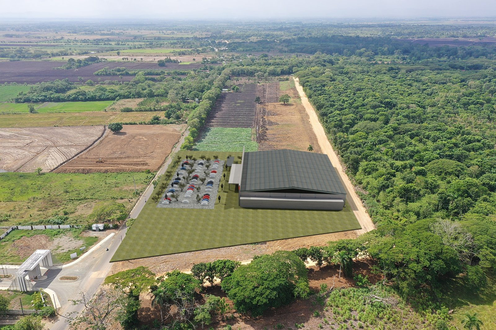
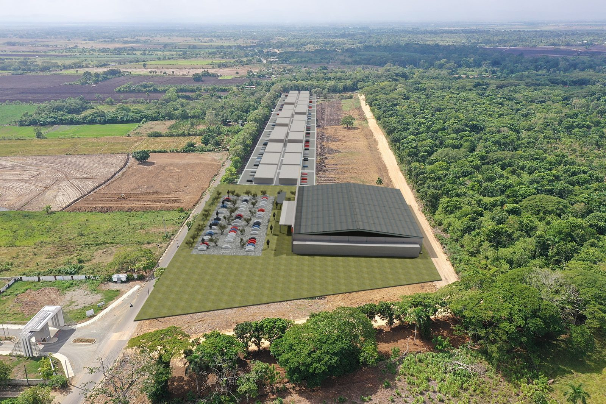
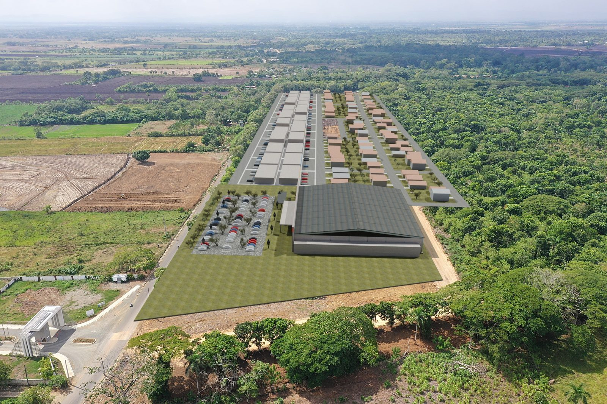
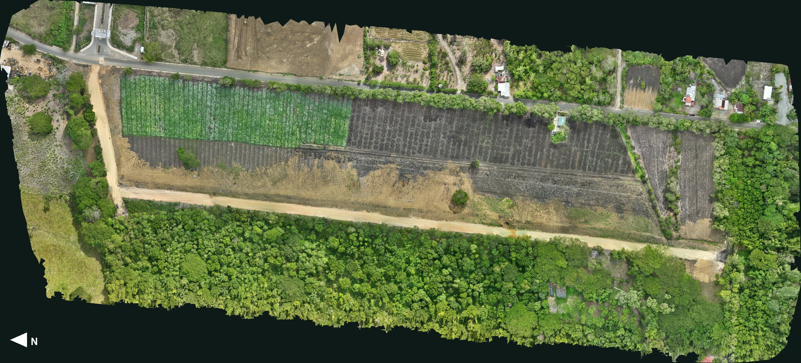
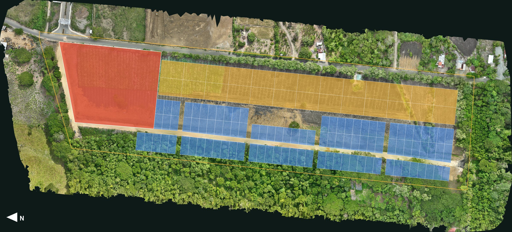

A menos de 300 m de la Circunvalación
El Pozo
Solares y plaza comercial en San Francisco de Macorís.
El proyecto
Qué es El Pozo
145,232 m²de terreno
126solares
21,727 m²para la plaza comercial
Aquí iría la descripción del proyectoQué se va a construir, para quién y en qué etapas.
Maqueta 3D
El proyecto sobre el terreno
Arrastra para girar.
Maqueta de ejemplo
Plano base: © OpenStreetMap · tono: Sentinel-2 cloudless, EOX
El recorrido completo
Todo el camino, en cámara rápida
Los vuelos del dron completos, acelerados.
×6
0:00 de 3:00 reales
Proyección
Cómo crecería El Pozo
Una secuencia posible de desarrollo, sobre la foto de dron desde la entrada.
Render ilustrativo · orden de ejemplo



Fotos del dron
Hoy y terminado
Desliza sobre la foto: el terreno hoy y el proyecto funcionando, con la plaza, los locales frente a la carretera y las casas.
Render ilustrativo
HoyTerminado
Desliza: hoy y con el proyecto · norte a la izquierda


HoyCon el proyectoPlaza comercialMixtosResidencial
Recorrido 360
Mira alrededor
Solares
Aquí iría la información de los solares
Número, área, precio y disponibilidad de cada solar, con su ficha.
foto o plano
Solar comercial21,727 m² · precio y condicionesfoto o plano
Solares mixtos26 de 1,220 m² · precio y condicionesfoto o plano
Solares residenciales99 de 342 a 455 m² · precio y condicionesUbicación
Cerca de todo
Toca un lugar para ver la ruta en carro desde El Pozo.
Rutas en carro por las vías abiertas (OpenStreetMap y OSRM). La Circunvalación está en obra y tendrá entrada junto al proyecto; con ella los tiempos son un estimado a 60 km/h.
Contacto
Aquí iría el contacto de ventas
Nombre de la persona, teléfono, WhatsApp y horario.
Formulario de contacto